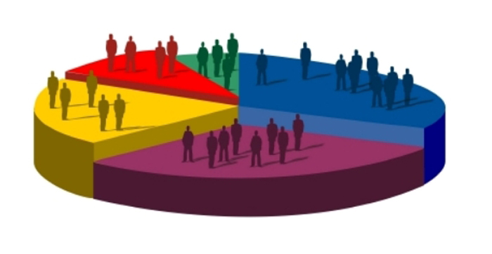
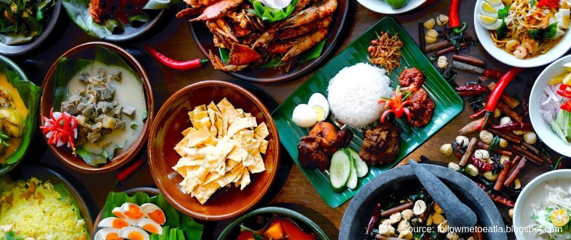

Malaysian Chinese

History

Chinese settlers first arrived in Malaysia in the early 15th century which mostly originated from the Fujian Province. Another major influx occurred during the British colonization period within the late19th and early 20th centuries for its tin reserves in Malaysia. Immigrants from China are brought by British Malaysia to satisfy the colonists' labor needs. Most Chinese today in Malaysia are the descendants of these Chinese settlers. In Malaysia, they are referred to as ‘Chinese’ and represent the second largest ethnic group after the ethnic Malay majority.
Demographics
As of 2010, Malaysia’s population is estimated to be around 27.9 million people. According to the CIA’s World Factbook, 50.4 percent are Malays, 23.7 percent are Chinese, 11 percent are indigenous, 7.1 percent are Indian and 7.8 percent belong to other ethnic groups. The largest group within the Chinese population would be the Min Chinese. The main language for Chinese people in Malaysia would be pure Chinese language. However, Chinese people also speak a range of other languages, such as Cantonese, Foochow, Mandarin, Hakka, Hokkien and Hainan.
Names

Chinese people traditionally have three names. The surname is used first and is followed by two personal names. Many Chinese people nowadays adopt more Western names and may use that more often instead. It is considered polite to ask them how they prefer to be called when getting to know them.
Influence
Chinese people dominate the country’s commerce and economy. This is shown to be the case where main roads are typically lined with Chinese shops in towns on the peninsula’s west coast. Recently, the Malaysian government has intervened to help other ethnic groups to compete in commercial activities. At the other end of the spectrum, organized crime is also dominated by Chinese triad gangs which their history dates back to Malaysia’s colonial era.
Festivals
The main festival for Chinese people would be the Chinese New Year, which is celebrated throughout Malaysia. T he Chap Goh Mei festival which happens on the 15th day of the Chinese New Year marks the end of the festival. Other Chinese celebrations include a mid-autumn festival known as the Moon Cake Festival. This century-old celebration is said to honor a mythical moon princess with lantern parades.
Cuisine
There are many unique Chinese cuisines that can be seen here in Malaysia that help contribute to Malaysia’s diverse range of cuisine. Examples of Chinese cuisine would include Bak Kut Teh, Char Kway Teow, Chee Cheong Fun, Hainan Chicken Rice and many more. Many Chinese Malaysian dishes are similar to those found in southern China, though there are local inventions such as loh mee, a kind of noodle soup found in the Klang Valley.

Written By: Ryan Lim Fang Yung Published Date: 20 August 2020
Hobbies: Reading, Coding, Playing Computer Games As of 2020, Mr. Lim is a Diploma Student currently studying in Asia Pacific University.He is the owner of the Study Malaysia Website together with Mr. Premsharaan. Contact Details: 014-6321806 Email: tp055343@mail.apu.edu.my